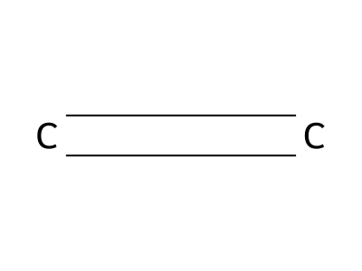
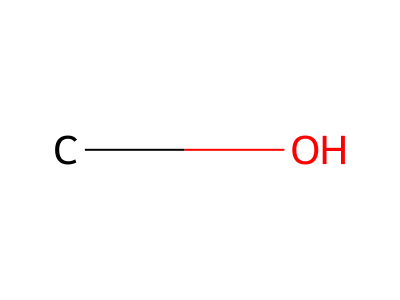
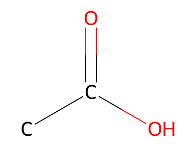
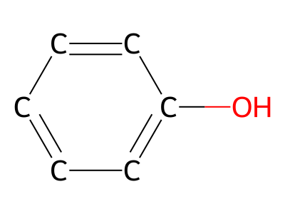

有機分類帽
給化學老師的推銷版
問題：學生拿到結構式，「看到 OH 就選醇、看到 C=O 就選醛」，常常忽略位置、混淆相似類別。
解決方案：一款有趣的官能基辨識遊戲。學生在 3 種不同玩法中反覆練習，用「看圖、判斷、得到即時回饋」的迴圈，建立官能基辨識直覺。
核心玩法：看結構式圖，從 4 個選項選出正確名稱或類別。
三種玩法
Practice 練習模式
單人無壓力練習。題目逐題出現，答錯可看提示。每輪 10 題後看成績，然後選擇繼續或離開。
適用：課後練習、複習、補救教學
Duel 搶答模式
兩人對戰（真人或與電腦 AI）。題目出現時有視覺干擾（如放大效果），玩家搶答後才看選項。先答對贏的人。
適用：課堂互動、分組競賽、增加趣味
圖鑑查閱
遊戲內的官能基與化合物圖鑑。記錄學生見過哪些分子、在哪些難度答對過。可作為複習清單。
適用：學習進度追蹤、視覺化成就
化學內容涵蓋
目前題庫包含以下官能基與代表化合物：
烷 烯 炔 芳香烴 醇 醚 醛 酮 羧酸 酯 胺 鹵化物 酚




與高中化學課本對照
| 課本內容 | 遊戲支援 | 教學活動 |
|---|---|---|
| 烷、烯、炔、芳香烴 | ✓ 支援 | Level 1（碳氫骨架）：辨認單、雙、三鍵與苯環 |
| 醇、醚 | ✓ 支援 | Level 2：區分「氧接氫」與「氧夾兩碳」 |
| 醛、酮 | ✓ 支援 | Level 3：判斷 C=O 在末端還是中間 |
| 羧酸、酯 | ✓ 支援 | Level 4：區分 -COOH 與 -COO-C |
| 胺、鹵化物 | ✓ 支援 | Level 5：辨認 N、F/Cl/Br/I |
| 苯環衍生物 | ✓ 支援 | 苯環陷阱關：區分苯酚 vs 苯甲醇、芳香烴 vs 官能基 |
| 反應與實驗鑑別 | 可擴充 | 未來可加：溴水、過錳酸鉀、銀鏡、酯化、水解 |
為什麼適合你的課堂
打破「看到就選」的習慣
有專門的苯環陷阱關，訓練學生不靠「關卡主題」和直覺，而是真的看結構判斷。
彈性使用時機
Practice 可作課後練習；Duel 可作課堂暖身或段考複習競賽；圖鑑可作複習清單。
即時回饋，不猜謎
答錯立即標示與提示，學生知道下次要看哪個位置。
難度分層
初級考官能基類別、中級考化合物名稱、高級考英文術語。同一題庫，難度遞進。
能不能再加功能？
✓ 適合現在就擴充
- 課本明確出現的化合物：把課本圖片與例題轉成題目。
- 常見錯誤對比：如「醇 vs 酚」「醛 vs 酮」的對標題。
- 生活連結：乙醇、乙酸、丙酮等日常用品，加上「用途」與「識別方法」題。
⏸ 建議放進進階關卡
- 反應現象與實驗鑑別（需先確保學生學過反應與試劑）。
- 多官能基化合物的主官能基判斷（同一分子有多個官能基時如何選擇）。
- 有機命名規則細節（位置異構、優先序等進階內容）。
✗ 暫時不建議加入基礎關
- 多官能基藥物、複雜分子（會混淆初學者）。
- 反應機構、合成路線（超出「辨識」的範圍）。
1. 先驗證 13 類分類符不符合你的課本
2. 再補充課本常考的生活例子
3. 後期考慮加反應與鑑別題目
下一步
立即試用
打開遊戲本體，玩 Practice Level 1、Level 2、苯環陷阱關，看實際效果。
給我反應
分類對不對、例子選得好不好、有什麼課本內容一定要加。我們用你的課本版本對照修改。
版本：2026-07-11 | 適用版本：Organic Sorting Hat v2 (Practice + Duel Dynamic)